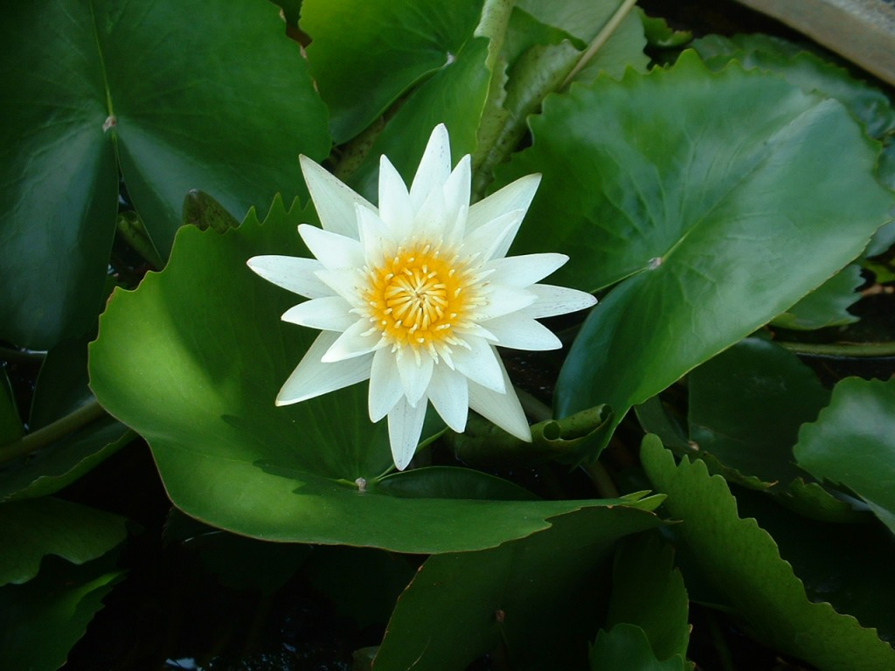
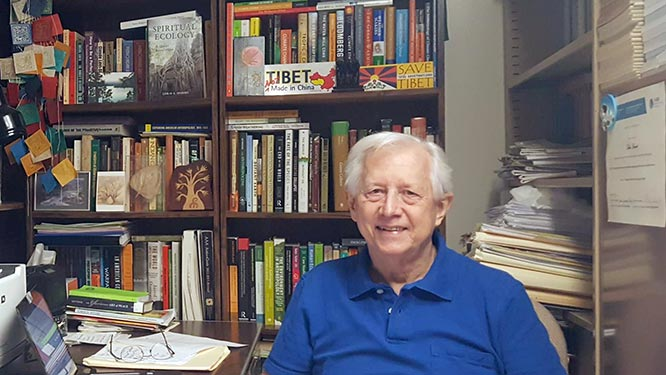

The spiritual ecology movement is the future, otherwise there might not be any future!
Plants like the lotus rise above the muck and obscurity of a pond or other water body to reach the surface and become illuminated by the sunlight. Such plants symbolize spiritual ecology in general and this Research Institute for Spiritual Ecology (RISE) in particular. Since Earth Day on April 22, 1970, the environmental crisis has only become worse. Certainly, the usual secular approaches to the ecocrisis have been important, but just as certainly they have proven to be insufficient. These now customary approaches include environmental science and technology, environmental education and studies, environmental governance, law, and politics, and so on. Almost all of these ordinary secular approaches treat only the superficial symptoms of the ecocrisis, not its deeper causes. Many profound thinkers consider the root causes to be essentially moral and ethical, and accordingly, also religious and/or spiritual. Only a most profound rethinking and transformation of culture, encompassing worldview, values, attitudes, behavior, and institutions from the individual to the social and global levels, holds any real promise for creating a more sustainable, green, just and peaceful relationship between humans and nature. Ultimately, religion and spirituality are the last hope to alleviate, or at least reduce, the environmental crises that plague humanity from the local to the global levels. Spiritual ecology is an intellectual and practical response to this dire need for the survival, well-being, and flourishing of planet Earth including humanity. Plants like the lotus symbolize and inspire this initiative toward creating and maintaining a more enlightened and viable sentient ecology.
Spiritual ecology encompasses a vast, diverse, complex, and dynamic arena of intellectual and practical activities at the interfaces of religions and spiritualities with ecologies, environments, and environmentalisms. Although this arena has deep roots extending far back into history to pioneering personages such as the Buddha and St. Francis of Assisi, in modern times, especially from the late 1980s through today, there has been an exponential efflorescence of activity in spiritual ecology. This includes not only a proliferation of publications like specialized textbooks, anthologies, and even two journals, but also organizations, conferences, workshops, projects, courses, programs, and so on, including at top universities like the University of Florida and Yale University. In short, this is a most fascinating, progressive, promising, and exciting development that has already generated substantial intellectual and pragmatic accomplishments and is increasingly recognized and appreciated as such. It is a pivotal component of “The Great Turning,” a third revolution beyond agriculture and industrialization to a more life sustaining and enhancing society that Joanna Macy has worked on for decades as described in her book Active Hope.
RISE is one of these projects. It is a natural outgrowth from decades of teaching, research, and publications on spiritual ecology and sacred places with fieldwork in Thailand by its founder and director. (See Related Publications under Author in this website). Its primary mission is to serve as a catalyst for meaningful information exchange, including rigorous discussion and debate. Its venue is exclusively the internet. Accordingly, this project is limited only by time and imagination, not by money. Available free to anyone in the world with access to the internet, this website contains an extraordinary wealth of information, including extensive lists of books, websites, and films on spiritual ecology and related phenomena like sacred places.
Beyond relevant aspects of this homepage, RISE will also eventually initiate and host a series of internet seminars, conferences, and workshops with a select group of the most relevant scientists and academics on specific topics such as Buddhist ecology and environmentalism in the East and West. Beyond stimulating, informative, penetrating, and insightful dialogues, such projects will also provide a context in which participants can further develop drafts of article or chapter manuscripts for future publication through the benefit of constructive comments, criticisms, and suggestions from interested colleagues.
In this respect, RISE serves yet another important function. Typically, individuals travel long distances to meetings at considerable expense, and not only for airfare, lodging, meals, and registration fees, but also in terms of their environmental impact. Imagine the ecological footprint of several hundred or even thousands of participants who travel long distances to attend a conference for just a few days each year. RISE provides an opportunity for intellectual activity focused on spiritual ecology that minimizes temporal, economic, environmental, and other expenses. Moreover, whereas most conferences allow only 15-30 minutes for the presentation of an individual paper and thereafter perhaps about 5-10 minutes for discussion, presentations and discussion in RISE events are not so severely constrained.
To optimize the dialog and its management, however, this component of RISE will be restricted to a few selected individuals who are especially invited to participate, this in contrast to the world-wide availability of the remainder of this web site with its variety and abundance of useful resources. On other occasions participation may be unrestricted and public.
Finally, it is noteworthy that because RISE does not depend on financing from any grant or other agencies, it escapes the constraints that any funding would impose on the usual research institute and its functions and contents. It also escapes the time and effort that would be sacrificed in regular fund raising to create and maintain an ordinary institute. Instead, the success of RISE will be generated by the genuine intellectual, moral, ethical and spiritual commitment, creative energy and achievements, and good will of its participants who, like RISE, can transcend monetary and other material considerations and restrictions to collaborate in a mutually rewarding project.
Director: Dr. Leslie E. Sponsel (les.sponsel@gmail.com)
Associate Director: Dr. Poranee Natadecha-Sponsel
Webmaster: Dr. Woravudh Lekpathum
Volunteers and interns

Lotus

Dr. Leslie E. Sponsel